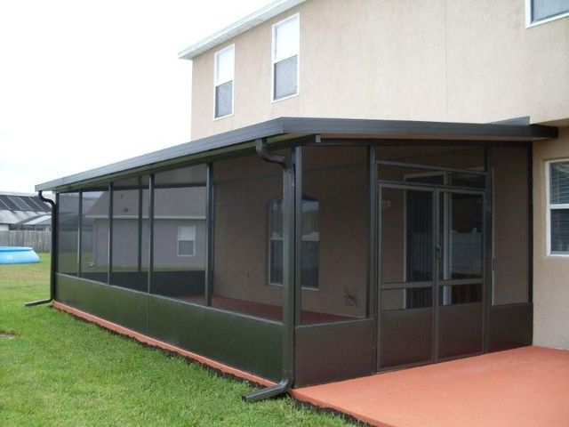

Drain cleaning Sioux Falls SD from the pros has an outstanding number of benefits that you are sure to appreciate. Let’s take a look at some of those benefits, then make that appointment without delay.
- Faster Draining: When you have a pro come out and clear the drains, the first benefit that you will notice is that your drain is draining much faster than it was before. Water should not stand on the sink or bowl but oftentimes thesis what happens because of a logged. But that is no longer a concern with a drain cleaning job.
- When you clear the drains of grease and other harmful substances you are improving the life of the drain. Although your drains should offer a long lifetime, you can extend that time and get even more out of your money. Why not?
- Prevent Odors: Noticed a smell that you just do not know where is coming from? Stop losing your mind and start looking underneath the sink. So often those foul odors inside of the house are caused by nothing else than the drains and all of the gunk that has accumulated inside. When the pros clean the drains, those odors are a thing of the past!
- Prevent Clogs: When you use a pro, you can help minimize a clogged drain in the future. They have all of the right tricks to keep your drains as clear as they can possibly be!
- Prevent Home Damage: Yes, drain cleaning can prevent damage to your home. How is this you mick? Because the cleaning removes bacteria and chemical deposits that may build up in the drains and cause problems.
These are just some of the many advantages that you can gain when you hire a pro to come in and clean the drains in your home.
Lotto is just one of those games that many people think are completely different from the others.
depends on the happiness variable. Many individuals have Lottozahlen, Lottoquoten, Tipps and techniques that they can use to
Play the lottery online. They work really hard and a number of approaches they can use
trying to win that money.
- A much better way to increase your chances of winning would be to develop a concrete plan to
and try unique combinations. There are a number of opinions
about how best to produce mixes for lottery entries. The majority of these
Theories mainly use hot and cold figures. Too often these people today let
mixtures not containing hot or cold quantities. These amounts should not
will be forgotten.
Each individual has quantities that are cold or hot for him or her. Don't waste your
Time searching for quantities based on events in your own life, such as
Birthdays, wedding customs, and other important life events like this. Any
quantity associated with your own life has no actual context
with attracted quantities. Your car registration, your mobile phone number, etc. are
is just a waste of your time and money. . .
Persons with scientific considerations can inform you that the only
method is to select random numbers. It is difficult to assign a person to performance.
move.
Translated with www.DeepL.com/Translator
- One must know that there are means to find patterns of amounts that will win
could do. The application of the lottery pattern strategy can help you to
that can gain constant amounts.
It should be noted that many lottery games calculate their amounts according to a random
method of amount formation. From a statistical point of view, the selection of your
Pay with a random number generator no longer has any winning prospects if you have birthdays,
Select number plates, telephone numbers, etc. This is the reason why, when you select a
person who believes in luck or lucky coincidences, then you might have amounts that
blessed for you.
- Some may even foolishly say that you have to rely on this
amounts for at least a portion of your lottery deposits.
State lottery games, along with the federal mega lottery, are undoubtedly funded with help from
of a giant random number generator.
- Mathematically there are absolutely no
scientific method of predicting another pair of random numbers, which can be
will develop. There it boils down to seeing in lucky numbers, without a
the scientific link with the quantities attracted.
It is imperative that you hire a foundation repair Garland TX specialist as soon as you notice that there is damage. The foundation of your home supports the structure, and when it is not in the best of condition, your entire home is at risk. There are many companies in the area offering foundation repair. Choose wisely and you can get the best job on your home!
When the foundation repair company repairs your foundation, they will either use slab jacking or piering to make the repair. This process lifts the foundation and then places it on top of a stable foundation support that has been built for the home. Which one is going to be used at your home? This all depends on what you want and what the repair company feels is best for your particular home.
Although it might seem a complicated process, it is really not that hard and any good company can do it in a fairly short amount of time. Look for a company that is licensed and has insurance because these two pieces keep you protected. Also search for a well-known company with a good reputation and plenty of experience. These things all give you peace of mind when it is time to choose the company that is best suited for your needs.
Do you need Foundation Repair?
There are several obvious signs that your home has foundation damage that needs to be repaired quickly. It is a good idea to keep a close eye on your home and watch out for these signs of foundation damage. If you notice them, make sure that you get in touch with someone to make the repairs immediately.
- Cracked walls
- Doors won’t close
- Floors that are bulging
- Structural settlement
Custom window treatments NYC enable you to create the look that you truly want in each and every room in your home. Whether you prefer blinds, valances, drapes, or something else, it is up to you to decide the look that you want for each room. These days it is valances that many people are using to decorate their windows. Valances are stylish, affordable, and definitely add the pristine character to your home that you seek.

Some valance styles are more popular than others. If you would like to add this type of window treatment to your home, take a look at some of the most popular styles out there today. With the help of a professional window treatment expert, you can outfit your windows to impeccable measures!
Box Pleat Valance
The box pleat valance is available in seizes of up to about 150 inches in width. With deep pleats in the fabric, this window valance gives a sophisticated and respectable look. It is an excellent choice for placement inside of your living room area.
Cameo Valance
A second popular type of valance that many people are choosing is the Cameo valance. This valance is also available in several sizes to accommodate many different sizes of windows. This valance gives off a great illusion of being mounted to the wall.
Swag Valance
The swag valance is another popular style that many people choose to put on their windows. The swag style has flowing pleats. This valance is available in many sizes. This is a valance that looks great in any room in your home.
These styles are just some of the many that you can choose to add to the windows in your home. Which valance style is your favorite? Do not wait to decorate your windows and give them the treatment they deserve.
Your bathroom upgrade is almost done and you are trying to figure out whether or not you want to get a bathtub or a shower for your new space. That being said, there are a lot of choices that you have to make. What color do you want it to be? How do you want it set up? Can you put both of those in there? No matter what type of shower or tub that you want, the decision is up to you and you can find a lot of different options that you will fall in love in.

If you find the right shower for your needs and you are trying to figure out exactly how you’re going to get it installed and how you’re going to take care of it, we can give you the help that you need. We have gotten baths and showers installed Ballwin MO for a number of years and we plan on continuing to do so in order to help our community to take care of everything that they need. We can take care of the plumbing and whatever else you need to have done so that your shower can be running and ready to go in next to no time.
Are you ready to check out everything that you need from us? Do you want to talk to us and see what showers we recommend and that we can help you to discover? No matter what you may be looking for, give us a call or take a look around at our new and improved website. We will get someone in touch with you as soon as we can so that we can start working toward the shower installation that you need as soon as we can.
Your patio is a huge part of your life outdoors. Whether you’re spending time with your family on a cool fall evening, or you’re setting out the grill so you can make a delicious meal, you probably spend a lot of time doing stuff on your patio. That being said, there are a lot of things that you can do with your patio to make it that much better for you and your family to enjoy. You can always add onto it, or you may even think about getting a patio awning in Columbus GA.
Why would you get an awning? A few reasons. First, they look really nice and they add a little bit of flavor to the way that your porch area looks. It gives it a little bit of a frill and can look really nice if you do it right. It can also be something to help protect certain areas of your patio. If you have birds or other critters that try to make a home on your patio, the construction of an awning can actually help to prevent them from making the area their home. And, it can protect some of your porch from the rain as well.
Whether you want an awning or you need repair, we have been taking care of patios for years. Let us know what you need from us and then take some time in order to see exactly how much you could be doing outside with your patio. Give us a call or check out our new website in order to see just how much of a difference that we can make when it comes time for you to upgrade and make changes to your current patio setup and construction.
You are building a home in San Diego (or another part of California) and you’ve been trying to figure out how to get it all together. There are a lot of different options for you to look at and take care of, and there are a lot of things that you could be doing in order to make sure that it’s all in order. But, as you likely know, there are a lot of problems that could happen if you don’t put the right foundation on your home. What are you supposed to do at that point in time?
That’s why a lot of people have been thinking about getting an earthquake foundation San Diego CA. You see, because there are so many earthquakes throughout the state, it’s important that there is something out there that can be used in order to ensure that you get all that you need in case of an emergency. Not only that, but you can also ensure that you have the option to go ahead and see which foundation could be best for the home you’re building. By having that sort of expertise and specialty on your side, you can ensure that you’ve got all that you need in order to get through the storm.
Do you want to learn about the different options that are available when it comes to your foundation? You don’t have to feel like you can’t figure any of it out. With some help from our staff and a little bit of guidance, you can feel confident that you’re going to be able to get what you need so that your house can stand firm on solid ground. Give us a call today to get started and to find out what you’re going to need to achieve your goals.
Alright, so you know that there are a lot of different things that you need to take care of in order to make sure that your family and your furry friends in your home are as comfortable as possible. However, there are a lot of times where we want to be able to get a little bit of fresh air without the hassle that can sometimes come with it. What are we supposed to do in order to make that a reality? Is there actually a way that we can get outdoors without having to chase everyone down and worry about where they are?

Screen room enclosures San Antonio may be the answer that you have been looking for. By utilizing some of the best tools in the business, you can make sure that you can get everything that you may need without the stress and hassle. We have so many different types of screen room enclosures that you can get that little bit of fresh air without having to worry about anything that is listed above. On top of that, you can do a little bit of work in order to make sure that you are going to be able to get a lot of space and enjoy what you have available to you.
Do you want to see what options that we have available? Or do you want to talk to a rep so that you can learn more about all of the different things that you can do in order to achieve your goals? Let us know and get in touch with us. We’ll work with you so that you can feel confident in the fact that you’ve got access to some of the best screen room enclosures that you can find.
You’ve been living in your home awhile, but you’ve started to notice that there are a lot of issues when it comes to keeping it warm or cool. Are you getting a draft from outside? Or is there something else going on where your windows don’t look the way that they should? No matter what may be wrong with your windows, it could be time for you to go ahead and get started with window replacement San Francisco. How do you know that it’s time for you to go ahead and get the replacement take care of?

One of the best things for you to do is to go ahead and see if you’re going to need to get a replacement from a professional that knows the ins and outs of whether or not windows need to be taken care of. On top of that, it gives you the option to go ahead and see just what windows are available for you to choose from. Take a look at the different designs that are out there and you can see just how much variety is out there for you to go ahead and choose from.
Let us know what you’re looking for and if you need some help trying to figure out whether or not it’s time for you to get your replacement, get in touch with us. We want to give you all that we can and we want to make it so that you can go ahead and see all of the different choices you have. We also want to make sure that your budget isn’t affected too much by your replacement. Give us a call and we will get started with your window replacement as soon as we can.
Think about how much that you use your furnace on a daily basis. During the winter months, you likely have it running all of the time and you are trying to figure out exactly what you need to do to keep it running. A lot of us deal with the same thing and, because of that, it’s important that you know what to do if you’re in a spot where you have difficulty getting your furnace to do the things that it needs to do. Who do you call when you’re in a position where your furnace just isn’t doing what it needs to do?
That’s a great question, and we have a suggestion. Our furnace repair Denver has years of experience in the industry and we can do everything that you need in order to make sure that you can get your furnace going in the way that you want to get it going. On top of that, we will work with you so that you can feel more confident when it comes time for you to use your furnace again. We can inspect the furnace to make sure that everything is alright with it and, on top of that, we can work with you to help you feel safe throughout the winter months as you’re using it.
Let us take care of you before the winter cold comes to stay. Give us a call today and we’ll get one of our specialists to come over and take care of your furnace for you as soon as we can. We want to help you get everything that you need so that you can stay warm and comfortable throughout the winter months. So, give us a call and we will make an appointment for you.
We all have different needs when it comes to dealing with our junk and trash on a regular basis. One week, we may be fine just using our trash bags and such. But, other weeks, we may end up in a situation where we need something a little bit bigger. If we run our own business or we’re trying to figure out how we’re going to get rid of all of the excess stuff that we’re going to come across when it’s time for us to make a renovation or change on the property that we’ve been working to renovate and change.
So, of course, it’s not really surprising that there are a lot of people out there who are trying to determine whether or not it’s a good idea to go ahead and get a dumpster that can help to take care of those issues. What are you even supposed to do when it comes time for you to try and figure out the best course of action in the world of dumpsters? Are you going to be able to pick between all of the different dumpster sizes Cincinnati or are you going to start to notice that there are a lot of issues that can come up when you’re taking care of such things? How can you get a huge variety to choose from?
That’s where this can all come in and help you out. No matter what sort of dumpster you need, big or small, you will have the opportunity to go ahead and see just how much of a difference it can make for you as you look at all of your options. Give us a call today so that we can get you the dumpsters that you need as soon as we can.